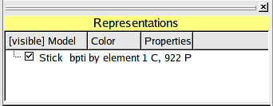
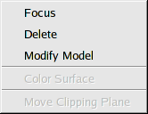
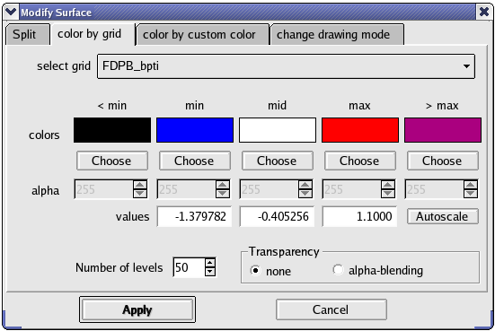
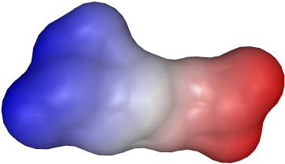
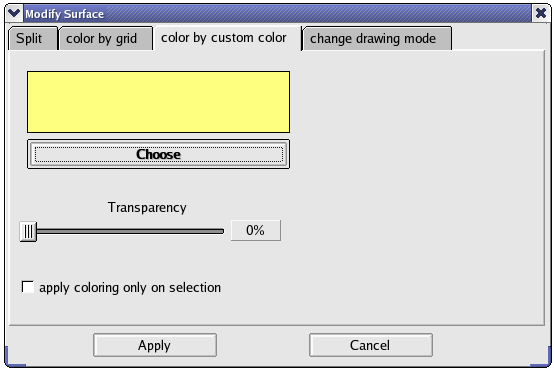
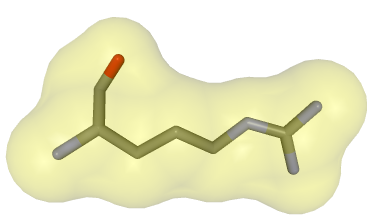
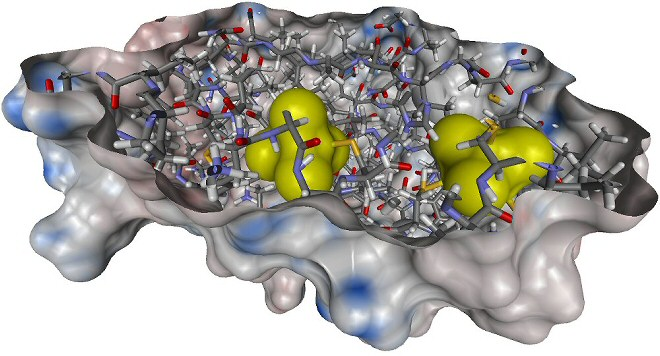
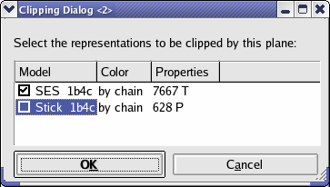

Representations View
The representations view enables the user to create and manage representations.
A representation is a set of geometric objects, which can be visualized in the
3D view.

The list view shows the name of the model, the name of the molecular entities, for which the
representation was created and the coloring method. The values to the right are the number
of molecular entities, which were used to create the representation (here one System) and the
number of geometric objects. All to the left side, there is a checkbox to switch the representation on and off.
The GeometricControl has its own context menu:

Coloring of surfaces
To color a surface, it has to be selected and the context menu entry "Modify Surface" must be clicked. Then a new dialog appears.
BALLView provides two possibilities to color surfaces:
Coloring by grids
Information on how to create and manage data grids can be found here.

At the top of the dialog, the user can select the grid, which he wants to use for coloring.
At every point of the surface, the value in the three-dimensional data grid is interpolated to a color,
which is then used to color the surface.
The colors, can be freely selected. If they are clicked, a dialog for color selection appears.
The min, mid and max colors are the colors between which is interpolated. They
correspond to the values, between which is interpolated.
The "< min" and "> max" colors are used for points in the data grid, which are outside
of this range.
If the autoscale button is pressed, the min, mid and max values are taken from the grid,
but the user can also change the values freely. The number of levels corresponds to the number of
colors, which are used for interpolation.
To create a transparent surface, the "alpha-blending" blending radio button at the lower left corner must be checked.
This also enables the sliders for the alpha values (opacity).
An example for the settings above:

Coloring by custom color

This part of the dialog enables the user to color a surface with only one color.
The color can be freely selected by clicking on the button "Select" and using the color selection dialog.
The surface can be made transparent by setting the alpha value.
Below an example with an alpha value of 80 and an underlying stick model:

Usage of clipping planes
Clipping planes are very useful for improving the visibility of otherwise hidden parts of molecules.
They cut of any graphical representation.
An example for their usage:

A new clipping plane is created by clicking the menu entry "Display->New Clipping Plane".
To position the clipping plane, it is best to switch it off first. When this is done, the clipping plane
becomes visible as a blue plane, which can then be moved by clicking the menu entry "Move" in
the context menu of the representations view. The clipping plane can be switched on and off at any time.
It is also possible to use them with only one
representation being clipped, while the other stay unaffected (see context menu for the clipping plane in the representation view).

|